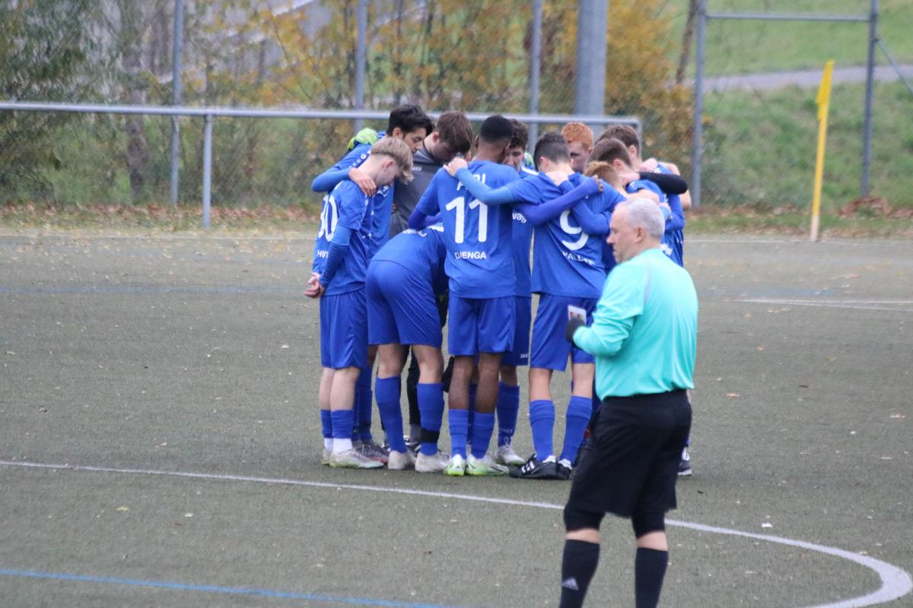

SGM ABI A 1:3 FC Union Heilbronn
Beim Topspiel der A-Junioren Regionenstaffel empfingen wir 3. den 2. FC Union Heilbronn. Nach unserer nicht ganz so glorreichen Leistung im Spiel vorher, waren die Jungs heiß und wollten die Niederlage wiedergutmachen. Nach 45 Minuten stand es 0:1, während wir die besseren Chancen aus dem Spiel hatten, ging der FC durch einen Standard in Führung.
Nach der Halbzeit eine Änderung und es war Highspeed ABI angesagt, wir pressten die Gäste hoch, zwingen sie zu Fehlern und endlich... Nach 60. Minuten erobern wir nach Pressing den Ball, über die Stationen Andrew und Eric, gelangt der Ball zu Enis. Enis dribbelt seinen Gegner aus, Querpass und Philipp ist da, 1:1 und wir sind heiß und Laufen an und an ... In der 77 Minute, nachdem wir eigentlich am Drücker waren, ein Fehler in unserer Abwehrreihe, den der FC Union eiskalt ausnutzte, bitter, aber noch ist es nicht aus. Wir marschieren weiter und machen weiter Druck, schaffen es allerdings nicht mehr zu klaren Torchancen und in der 90. Minute dann ein abgefälschter Freistoß, der in unserem Tor landet... 5 Minuten Nachspielzeit und wir fahren hoch und stehen plötzlich wieder im direkten Gegenzug frei vor dem Torspieler und entscheiden uns Falsch, die Reaktion danach aufmunternde Mitspieler, die füreinander da sind und das zeichnet uns einfach aus. Stolz auf diese Mannschaft, stolz auf diese Jungs.
Nicht immer ist der Fußball gerecht, das wäre wahrscheinlich ein Unentschieden gewesen an diesem Tag, aber wir können erhobenen Hauptes auf unser Pokalspiel am 02.12. in Beilstein hinarbeiten.
Es waren dabei: Linus, Romeo, Lukas, Ryan, Enis, Philipp, Eyüp, Finn, Fabi, Andrew, Julius, Jahir, Benni, Flori, Jannis und Eric.
O.P.